Southeast Oregon Travel Guide
Geographical term for the area along the borders of Oregon with Idaho, California and is also known by its nickname of the Oregon Outback ★
Places to See in Southeast Oregon
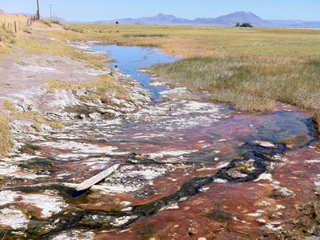
Mike Sisk ("msisk6"), CC BY 2.0, via Wikimedia Commons; Image Size Adjusted

Alvord Hot Springs
Geothermal spring at 4,078 feet (1,243 m) elevation on the western edge of the Alvord Desert into which the spring flows and eventually evaporates
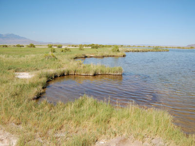
Amateria1121, CC BY-SA 3.0, via Wikimedia Commons; Image Size Adjusted

Borax Lake
10-acre alkaline lake in the Alvord Desert of southeastern Oregon, fed by geothermal springs 100 feet below the surface that range in temperature from 104 to 300 °F (40 to 149 °C)
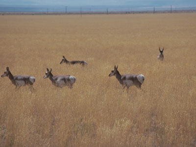
Bureau of Land Management, Public domain, via Wikimedia Commons; Image Size Adjusted

Catlow Valley
Remote valley at the northwestern corner of North America's Basin and Range Province, offering recreational opportunities including hiking, hunting, fishing, bird watching, and wildlife viewing
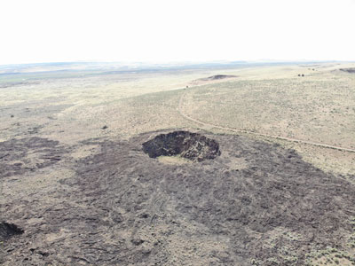
DKRKaynor, CC BY-SA 4.0, via Wikimedia Commons; Image Size Adjusted

Diamond Craters
Monogenetic volcanic field consisting of a 27-square-mile area of basaltic lava flows, cinder cones, and maars
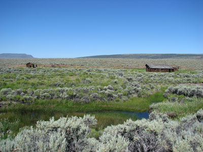
U.S. Fish and Wildlife Service Headquarters, Public domain, via Wikimedia Commons; Image Size Adjusted
.jpg){kind=link}
Hart Mountain National Antelope Refuge
Remote high desert wildlife refuge featuring expansive open landscapes, rugged fault-block mountains, natural hot springs, and diverse habitats supporting abundant wildlife.
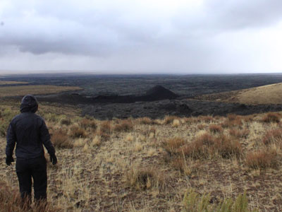
Scaston23, CC BY-SA 4.0, via Wikimedia Commons; Image Size Adjusted

Jordan Craters
Volcanic field with flows that are the youngest of a series of large Quaternary basalt fields in the eastern part of Oregon
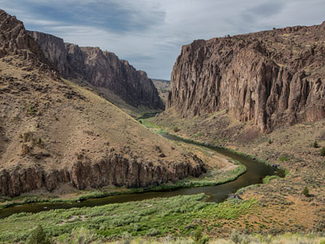
Bureau of Land Management, Public domain, via Wikimedia Commons; Image Size Adjusted
.jpg){kind=link}
Owyhee River
River draining a remote area of the arid plateau region immediately north of the Great Basin, rising in northeastern Nevada and flowing generally northward near the Oregon-Idaho border to the Snake River
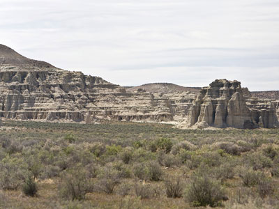
Cacophony, CC BY-SA 3.0, via Wikimedia Commons; Image Size Adjusted

Pillars of Rome
Sparsely populated high desert of southeastern Oregon featuring 100-foot-high formations of fossil-bearing clay, measuring about 5 miles long and 2 miles wide
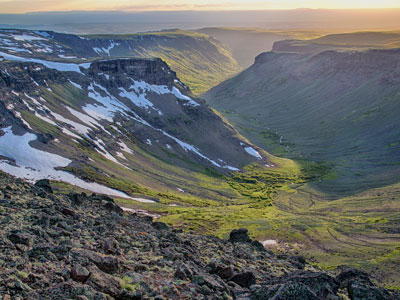
Bureau of Land Management, Public domain, via Wikimedia Commons; Image Size Adjusted
.jpg){kind=link}
Steens Mountain
Massive fault-block mountain rising above the high desert, featuring dramatic cliffs, sweeping vistas, alpine lakes, and one of the most scenic remote drives in the region.
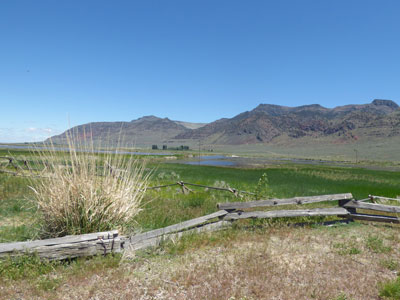
Bureau of Land Management Oregon and Washington from Portland, America, Public domain, via Wikimedia Commons; Image Size Adjusted
.jpg){kind=link}
Warner Valley
Remote valley in south-central Oregon, home to a chain of lakes and wetlands, and offers a number of recreational opportunities including hunting, fishing, bird watching, and wildlife viewing
Overview
Southeast Oregon, the “Oregon Outback,” is a huge, sparsely populated high desert along the Idaho, Nevada, and California borders. Burns, Klamath Falls, and Lakeview are the main towns. Visitors come for solitude, wide-open scenery, dark skies, and wild hot springs.
The region has empty roads, volcanic fields, and big wildlife areas, such as Malheur National Wildlife Refuge, Steens Mountain, and the Alvord Hot Springs. It needs planning, since gas and services are far apart and cell coverage is spotty.
Geography
Southeast Oregon is part of the Great Basin and the Columbia Plateau, with sagebrush steppe, basalt canyons, and basin-and-range fault-block mountains. Steens Mountain rises to 9,738 feet, with a steep east face above the Alvord Desert, a dry playa. Other highlights include Borax Lake, Catlow Valley, Warner Valley, and the canyons of the Owyhee River. The climate is dry, with hot summers and cold winters.
History
The Northern Paiute, Klamath, Modoc, and Bannock peoples lived in this region for thousands of years. Fur trappers, including Peter Skene Ogden in 1826, were the first Europeans to explore the area, and emigrants on the Applegate Trail crossed its southern edge. The Modoc War of 1872–73 was fought just south of the border. Cattle ranching took hold in the late 1800s, led by ranchers such as Peter French, and Basque sheepherders later settled the area.
Cities and Towns
Burns is the hub of Harney County and the base for Malheur and Steens Mountain. Lakeview, known as Oregon’s tallest town at 4,800 feet, is a base for hot springs and hang gliding. Klamath Falls, on the shore of Upper Klamath Lake, is the largest city and the gateway to nearby Crater Lake National Park. Smaller communities include Frenchglen, Fields, and Paisley.
National Protected Areas
Malheur National Wildlife Refuge is a major stop for migrating birds in spring and fall. Hart Mountain National Antelope Refuge protects pronghorn and sage-grouse habitat, and the Steens Mountain Cooperative Management and Protection Area and Owyhee Canyonlands are managed by the Bureau of Land Management. Crater Lake National Park is just northwest of Klamath Falls, and Lava Beds National Monument is just across the California line.
State Parks and Historic Sites
Succor Creek State Natural Area and Lake Owyhee State Park protect colorful canyon scenery on the eastern edge. Goose Lake State Recreation Area sits on the California border, and Collier Memorial State Park near Klamath Falls has a logging museum. Natural and volcanic sites include Diamond Craters, Jordan Craters, and the Pillars of Rome.
Seasons and Best Time to Visit
Late spring through early fall is the best time to visit, when roads are open and the weather is warm. Spring is the best time for bird migration at Malheur, usually in March through May. Summer brings heat but also access to the high Steens Mountain Loop Road, which is typically open from July to October. Fall has cooler temperatures and golden aspen on Steens, and winter is cold with snow that closes many backroads.
This article uses material from the Wikipedia article "Southeastern Oregon", which is released under the Creative Commons Attribution-Share-Alike License 3.0. Additional information is from Oregon State Parks, the U.S. Fish and Wildlife Service Malheur National Wildlife Refuge page, and the Bureau of Land Management Steens Mountain page.
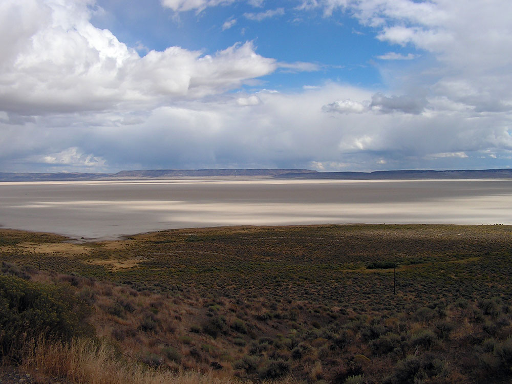
.jpg){kind=link}